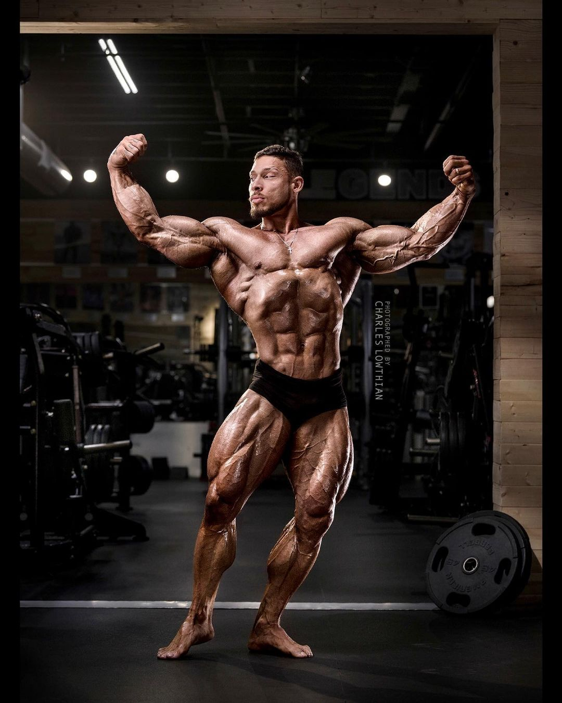

Arnold Schwarzenegger,mr olympia entre outros praticantes do esporte
Ramon dino
Arnold Schwarzenegger,mr olympia entre outros praticantes do esporte
Ramon dinoa academia tem diversas vantagens, aqui mostramos 5 delas : a melhora da autoestima, um melhor desenvolvimento fisico, ajuda com problemas cardiovasculares, reduz o risco de diabetes e fortalecimento osseo
muitas pessoas levam a vida na academia como uma valvula de escape ou passatempo, voce pode tentar tambem!
para cada musculo do nosso corpo existem diversos exercicios para desenvolve-los, entre os mais conhecidos estao
quadriceps: cadeira flexora, cadeira extensora, bulgaro, agachamento sumo e etc braços: supino inclinado, desenvolvimento, levantamento lateral, triceps corda, rosca e etc gluteo e posterior: elevaçao pelvica, mesa flexora, stiff, agachamento smith, cadeira abdutora e etc
biceps: rosca, rosca martelo,biceps com pegada ampla,biceps com corda no cross,rosca halter no banco inclinado e etc
abdomen: abdominal tradicional, elevacao de pernas, abdominal em v, prancha, prancha lateral, elevaçao de quadril e etc
gluteo: agachamento,afundo,elevacao pelvica, mesa flexora,extensora, elevação de quadril coice, leg press 45 graus e etc
o fisiculturismo e uma modalidade competitiva focada na musculaçao e hipertrofia muscular, normalmente voltado para a estetica e saude
entre alguns dos fisiculturistas mais conhecidos:
Ramon dino
Arnold Schwarzenegger,mr olympia entre outros praticantes do esporte
Ramon dino
a academia é uma parte importante da sociedade, reune diversas classes sociais e diferentes pessoas em um unico ambiente,alem de importante para a saude fisica o exercicio fisico é importante para a saúde mental
Arnold Schwarzenegger,mr olympia entre outros praticantes do esporte